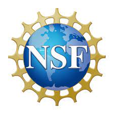

I am an Assistant Professor in the Department of Electrical and Computer Engineering at University of California, Riverside. I am also an Affiliated Faculty with the Department of Computer Science and Engineering, and with the Computational Data Science Program. I am a member of NC4 (Center for Networked Configurable Command, Control, and Communications) and CRIS (Center for Robotics and Intelligent Systems) Centers at UCR. I am an Associate Editor for IEEE Transactions on Wireless Communications in the area of Machine Learning and Artificial Intelligence, and an Editor for IEEE Transactions on Green Communications and Networking in the area of Green Computing and Artificial Intelligence. I received the NSF CAREER Award in 2022.
Our group's research is on information theory, distributed/federated learning, and trustworthy AI/ML over large-scale networks. We design massive-scale reliable networked information systems with strong information-theoretic guarantees for security, privacy, and sustainability.
Prospective students please follow this link.
Contact: I can be reached at bguler at ece dot ucr dot edu
News:
May 2024: Hasin had a new paper accepted to IEEE Transactions on Communications, congratulations!
April 2024: Hasin had two papers accepted to IEEE International Symposium on Information Theory (ISIT 2024), congratulations!
Mar 2024: I will be serving as an Associate Editor for IEEE Transactions on Wireless Communications, in the area of Machine Learning and Artificial Intelligence.
Feb 2024: I recently gave a presentation at the Inland SoCal Climate Action Conference on our lab's efforts for enhancing climate resilience equity.
Feb 2024: Hasin had his paper Secure Aggregation for Clustered Federated Learning with Passive Adversaries, accepted to IEEE Transactions on Communications, congratulations!
Jan 2024: I was named a Rising Star in Computer Networking and Communications!
Dec 2023: Hasin had his paper Over-the-air Clustered Federated Learning accepted to IEEE Transactions on Wireless Communications, congratulations!
Dec 2023: Xingyu and Hasin had their paper Privacy-preserving Collaborative Learning with Linear Communication Complexity accepted to IEEE Transactions on Information Theory, congratulations!
Nov 2023: Hasin has passed his PhD qualifying exam, congratulations!
Sep 2023: Xingyu and Hasin had their paper SCALR: Communication-Efficient Secure Multi-Party Logistic Regression accepted to IEEE Transactions on Communications, congratulations!
Aug 2023: Yushu had his first paper Federated Learning for Massive MIMO Power Allocation accepted to the Asilomar Conference!
July 2023: New collaborative funding award for AI Equity and Sustainability!
June 2023: Xingyu and Umit presented their paper at FL-ICML Workshop on Federated Learning and Analytics in Practice: Algorithms, Systems, Applications, and Opportunities, congratulations!
May 2023: Serving as a TPC member for INFOCOM 2024!
May 2023: Google Cloud Research Innovator!
April 2023: Our group has two papers accepted at ISIT 2023, Secure Aggregation for Clustered Federated Learning and Breaking the Quadratic Communication Overhead of Secure Multi-Party Neural Network Training. Congratulations to Hasin and Xingyu!
March 2023: Organizing a special session on federated learning and wireless edge intelligence at Asilomar 2023!
January 2023: New paper accepted to AISTATS 2023, congratulations Xingyu and Hasin!
December 2022: Our paper Securing Secure Aggregation: Mitigating Multi-Round Privacy Leakage in Federated Learning has been accepted to AAAI 2023!
September 2022: Our group has received a UCR OASIS Funding Award to support our research.
August 2022: Serving as a track co-chair for ML and Optimization for Wireless Systems at WCNC 2023, submission deadline Sept 12, 2022!
August 2022: Our paper Communication-Efficient Secure Aggregation for Federated Learning has been accepted to Globecom 2022.
July 2022: Serving as a panelist at the North American School of Information Theory.
June 2022: Organizing an AI workshop for high school students at UC Riverside in July 2022, in collaboration with the Redlands Unified School District.
Apr 2022: Seminar at UCLA.
Feb 2022: Received an NSF CAREER Award!
Jan 2022: Our paper Over-the Air Clustered Federated Learning has been accepted to International Conference on Acoustics, Speech, and Signal Processing (ICASSP 2022). Congratulations Hasin!
Dec 2021: New paper on privacy-preserving federated learning! at ICLR 2022 ICLR Workshop on Socially Responsible Machine Learning. We introduce a sparse communication framework for speeding up secure aggregation.
Oct 2021: New paper on asynchronous federated learning! Preliminary version to appear at NeurIPS Workshop on Federated Learning: New Challenges on Privacy, Fairness, Robustness, Personalization and Data Ownership.
Sep 2021: Serving as a TPC member for IEEE International Symposium on Information Theory (ISIT 2022), submission deadline Jan 15, 2022!
Aug 2021: Serving as a TPC member for IEEE Wireless Communications and Networking Conference (WCNC 2022), submission deadline Oct 15, 2022!
July 2021: Received the UCR Regents' Faculty Fellowship!
July 2021: New paper on sustainable/green federated learning A Framework for Sustainable Federated Learning at the International Symposium on Modeling and Optimization in Mobile, Ad hoc, and Wireless Networks (WiOpt)!
June 2021: New paper on privacy-preserving federated learning! Securing Secure Aggregation: Mitigating Multi-Round Privacy Leakage in Federated Learning, preliminary version accepted at FL-AAAI Workshop 2022.
May 2021: Research highlight from the ECE Department! Privacy-Aware Large-Scale Machine Learning
April 2021: Our paper on sustainable/green machine learning Energy Harvesting Distributed Machine Learning has been accepted to IEEE International Symposium on Information Theory!
January 2021: Our paper Turbo-Aggregate: Breaking the Quadratic Aggregation Barrier in Secure Federated Learning has been accepted to IEEE Journal on Selected Areas in Information Theory: Privacy and Security of Information Systems
January 2021: Our paper CodedPrivateML: A Fast and Privacy-Preserving Framework for Distributed Machine Learning has been accepted to IEEE Journal on Selected Areas in Information Theory: Privacy and Security of Information Systems
October 2020: Our paper BREA: Byzantine-Resilient Secure Federated Learning has been accepted to IEEE Journal on Selected Areas in Communications: Machine Learning in Communications and Networks!
October 2020: New project on resilient communications and computing in large-scale networks!
September 2020: Our paper A Scalable Approach for Privacy-Preserving Collaborative Machine-Learning has been accepted to Conference on Neural Information Processing Systems (NeurIPS 2020)!
July 2020: New paper on Byzantine-robust privacy-preserving federated learning: BREA: Byzantine-Resilient Secure Federated Learning
May 2020: New paper on communication-efficient secure federated learning: Turbo-Aggregate: Breaking the Quadratic Aggregation Barrier in Secure Federated Learning
May 2020: New paper on distributed graph processing: TACC: Topology-Aware Coded Computing for Distributed Graph Processing
April 2020: New paper on privacy-aware distributed machine learning: CodedPrivateML: A Fast and Privacy-Preserving Framework for Distributed Machine Learning
Support:
Our research is supported by a diverse range of projects. We acknowledge all our past and current sponsors.
